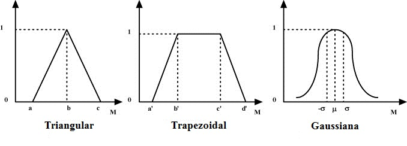
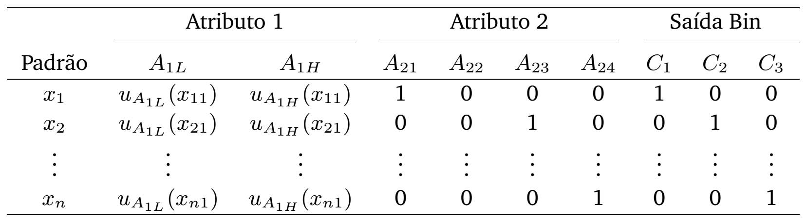

Jorge Salvador Paredes Merino
O que se procura na Classificação?
Os Sistemas de Inferência Fuzzy (SIF) surgem como uma alternativa que une:
Nos Sistemas Fuzzy Evolucionários
Nos Sistemas Fuzzy Evolutivos
Objetivo Primário
Objetivos Secundários
Mapeamento a graus de pertinência através das funções de pertinência.

Formatos triangulares (Padrão e Tukey) com 3, 5 ou 7 termos linguísticos.
Binarização dos atributos categóricos

Geração das premissas
Laboratórios da PUC-RIO
Obrigado pela atenção
Contato:
[jparedes, adriano,
marley,
ricardo] @ ele.puc-rio.br